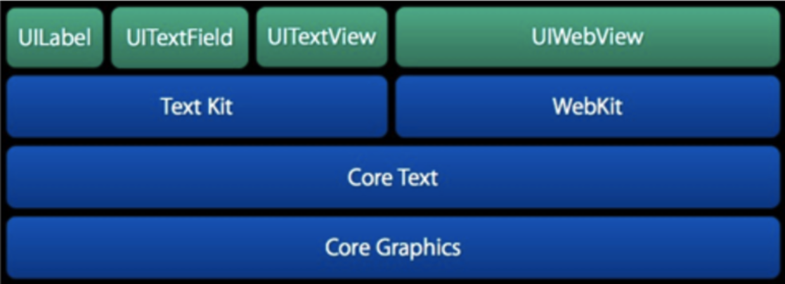

CoreText 简单了解
1、 排版的一些基础知识
1.1、字符（Character）和字形（Glyphs）
1.1.1、概念
文本显示的主要过程就是字符到字形的转换：
- 字符：信息本身的元素；在计算机中是一个编码，如 Unicode 字符集囊括了大部分字符
- 字形：字符的图标特征，一般存储在字体文件中； 一个字符可以对应多个字形（不同的字体，同种字体的不同样式：粗体、斜体） 一个字形，也可以容纳多个字符连字符，如下：（右边的字形是连写ff，包括两个字符f）：

连字符是一种上下文相关的字形，一个字符的字形由受到下一个字符的影响。
1.1.2、字形度量
在 iOS 中渲染到屏幕的字形有多个度量(Glyph Metrics)：

- 边界框 bounding box ：一个假想的框子，在边界框内尽可能紧密的装入字形；
- 基线 baseline ：一条假想的线，同一行的字形以该条线作参考；该条线最左侧的一个点是基线的原点；
- 上行高度 ascent ： 基线距字体中最高的字形顶部的距离，是一个正值
- 下行高度 descent： 基线距字体中最低的字形底部的距离，是一个负值
- 行距 linegap
- 行高 lineHeight = ascent + |descent| + linegap
- 文字的排版顺序 text direction ：像English是从左上角开始，从左到右；也有文字的排版是从右到左或者是从上到下的排版等；
- 断行 line breaking：在字符串中找到一个点，截取出一段文本用于显示一行；
- 左间隙 left-side bearing：是字符之间默认的间隙；（同理还有right-side bearing）
2、CoreText
Core Graphics 是一个2D图形渲染引擎，能够处理iOS中图形显示问题：能够直接处理字体（Fonts）和字形（glyphs），将文字渲染到界面上，它是基础库中唯一能够处理字形的模块。
CoreText 是在 Core Graphics 基础上对处理文字和字体的功能的封装，将显示的文字内容、位置、字体、字形直接传递给 Core Graphics。与其他 UI 组件相比，CoreText 具有更高效的排版功能！

CoreText 处在非常底层的位置，我们常用的 UILable、UITextField、UITextView、UIWebView 都是基于 CoreText 来实现的。
使用 CoreText 的优点：
CoreText占用内存更少，渲染速度更快；CoreText的CTFrame可以在后台线程渲染；CoreText在渲染界面前就可以精确地获得显示内容的高度；CoreText可以做更好的原生交互效果，更细腻的视觉特效！
2.1、CoreText 坐标系问题
CoreText 以 Core Graphics 基础，使用 Core Graphics 的坐标系，以左下角为坐标原点；而我们常使用的UIKit是以左上角为坐标原点！ 因此使用 CoreText 绘制文字需要对其坐标系进行转换，否则直接绘制出现位置反转的镜像情况。

通常情况下是直接获取当前上下文 CGContext，将 CGContext 的坐标系转换为CoreText坐标系，再将布局好的CoreText绘制到当前上下文中：
- (void)drawRect:(CGRect)rect{
//1.获取当前绘图上下文
CGContextRef context = UIGraphicsGetCurrentContext();
//2.旋转坐坐标系(默认和UIKit坐标是相反的)
CGContextSetTextMatrix(context, CGAffineTransformIdentity);//设置当前文本矩阵
CGContextTranslateCTM(context, 0, CGRectGetHeight(rect));//文本沿y轴移动
CGContextScaleCTM(context, 1.0, -1.0);//文本翻转成为CoreText坐标系
//3.开始绘制
CTFrameDraw(_frameRef, context);
}
3、 CoreText 的常用布局元素
渲染文字到屏幕时常用的几个元素如下：

CTFrameRef：由多个CTLineRef组成，有几行文字就有几行CTLineRef；CTLineRef：可以看做CoreText绘制中的一行的对象； 通过它可以获得当前行的上行高度 ascent , 下行高度 descent ,行距 leading, 还可以获得Line下的所有 Glyph RunsCTRunRef：基本绘制单元，由属性 attributes 都相同的部分字形组成；
除了上述几个元素，还有一些类默默的处理排版：
CTRunDelegate：是CTRunRef的代理回调，通过Delegate可以手动设置CTRunRef的Ascent、Descent、Width等属性，这是图文混排的基础；插入一个空白的字符，将其字符的大小设置为(width,height)，留出对应的大小空白区域，然后在排版结束完通过CGContextDrawImage()在对应的位置插入Image就实现了图文混排的效果；CTFontRef： 是CoreText的字体，可以读取字体的版权信息（copyright）、fontFamily、style等信息；CTTypesetterRef：是CoreText的排版类，通过AttributeString创建，也可以根据需要附加options；常用于创建多行文本的换行和其他上下文相关的字符处理；CTFramesetterRef：排版生成类，内部持有一个CTTypesetterRef来负责换行、字符处理等；